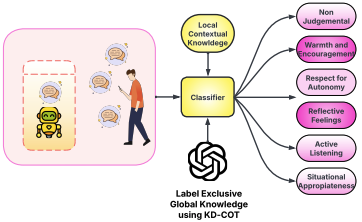
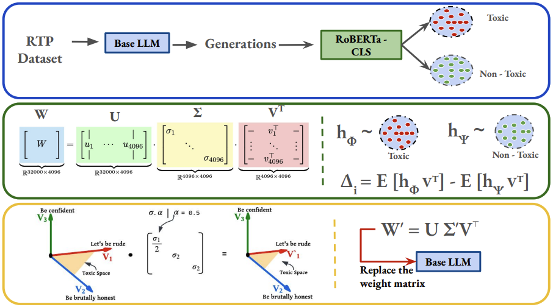
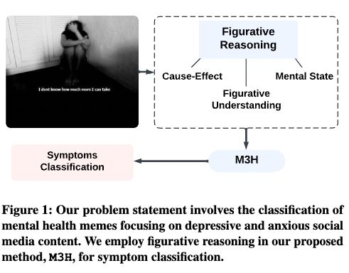
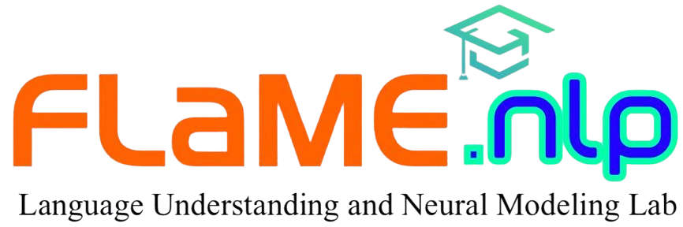
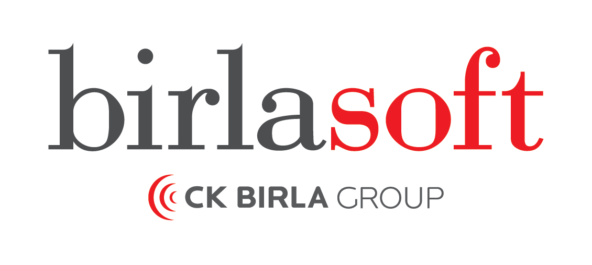

Hello 👋
I am a Ph.D. Candidate at IIIT Delhi, advised by Dr. Md. Shad Akhtar at the FLaMe Lab. My research builds trustworthy language and multimodal AI for mental health, across three threads: mechanistic interpretability and safety of LLMs, principled evaluation of therapeutic alignment, and understanding of implicit, figurative, and cross-lingual communication.
I have published at ACL 2026 (Main, Oral), NeurIPS 2025 (Poster), and The Web Conference (WWW) 2025 (Oral) — the last in collaboration with Dr. Shweta Yadav (UIC). Earlier, I was a Project Officer at IIT Madras building ASR/TTS pipelines for Indian languages under the Bhashini mission, and before that a Data Scientist at Birlasoft and a Software Developer at Analytics2AI.
To know more, see my CV or drop me an email.
Research Interests
News & Updates
- Apr 2026Our paper “Measuring What Matters!! Assessing Therapeutic Principles in Mental-Health Conversation” was accepted to the Main Track of ACL 2026 (Oral).
- 2026Two papers on faithful mental-health response generation and neuron-steered low-resource machine translation are under review at EMNLP 2026.
- Sep 2025Our paper “Redefining Experts: Interpretable Decomposition of Language Models for Toxicity Mitigation” was accepted as a Poster at NeurIPS 2025.
- Aug 2025Received Google Research, Microsoft India, and ACM India travel grants to present our WWW 2025 paper in Sydney, Australia.
- Jan 2025Our paper AxiOM & M3H on multimodal mental-health meme understanding was accepted as an Oral at The Web Conference (WWW) 2025.
- Dec 2023Started my Ph.D. in Computer Science at IIIT Delhi, advised by Dr. Md. Shad Akhtar.
- Sep 2022Joined IIT Madras as a Project Officer on the Bhashini initiative, building ASR/TTS systems for Indian languages.
Publications



Preprints & Under Review
Experience

Ph.D. Candidate

Project Officer
